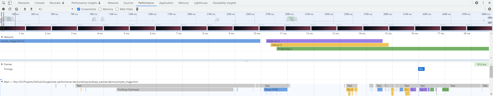

Benefits:
- Efficient loading of critical assets
- Improved page performance
- Concurrent fetching and processing of resources
How it works:
The preload-scanner identifies and preloads essential resources such as CSS, JavaScript, and images in parallel.
Results:
Multiple resources are loaded concurrently, reducing overall loading time and enhancing user experience.
Conclusion:
The preload-scanner optimizes web performance by efficiently loading resources in parallel, resulting in a smoother browsing experience.
Screenshot:
